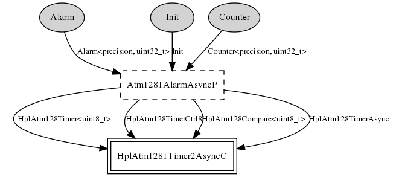

Build a 32-bit alarm and counter from the atmega1281's 8-bit timer 2 in asynchronous mode. Attempting to use the generic Atm128AlarmC component and the generic timer components runs into problems apparently related to letting timer 2 overflow. So, instead, this version (inspired by the 1.x code and a remark from Martin Turon) directly builds a 32-bit alarm and counter on top of timer 2 and never lets timer 2 overflow.
